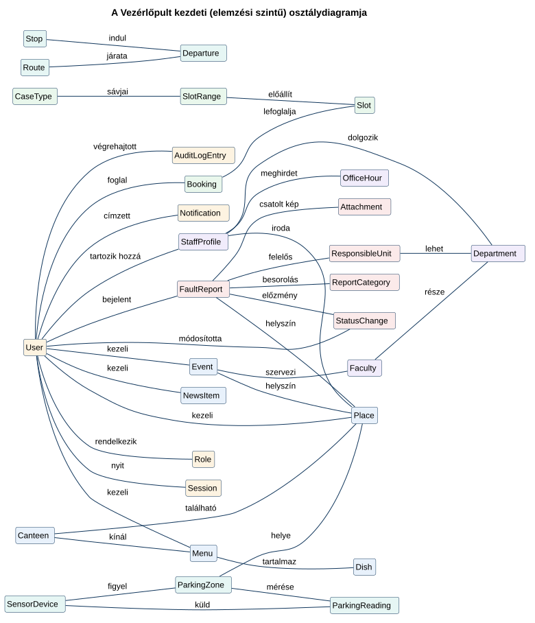

Címlap
Csoport neve: ME-nthetetlenek
Feladat sorszáma: 19
Feladat címe: Az uni-app jelenlegi funkcióinak gyakorlatiasabb átdolgozása
Analízis modell
Gyakorlatvezető:
Tompa Tamás
Csoporttagok:
| Név | Tankör | E-mail-cím |
|---|---|---|
| Csoportvezető: Dávid Gergő | G2-BP1 | gergo.david@student.uni-miskolc.hu |
| Győri Kristóf | G2-BP1 | kristof.gyori@student.uni-miskolc.hu |
| Maklári Máté | GE-BGI | mate.mate.165@gmail.com |
| Balázs Csenge Málna | GE-BGI | csenge.balazs.malna@student.uni-miskolc.hu |
| Nagy Virág | GE-BGI | virag.nagy@student.uni-miskolc.hu |
Beadás dátuma: 2026. 11. 14.
Történet
| Dátum | Verzió | Leírás | Szerző |
|---|---|---|---|
| 2026. 11. 14. | 1.0 | Kezdeti osztálydiagram, az osztályok felsorolása és a rendszer alrendszerekre bontása. A gyakorlatvezetővel való egyeztetésre készült változat. | ME-nthetetlenek |
Tartalomjegyzék
1. Bevezetés
Ez a dokumentum a Vezérlőpult nevű rendszer objektumorientált analízisének eredményét, az analízis modellt írja le. Kiindulópontja a H3 határidőre elkészült szoftverkövetelmény-specifikáció (SRS), elsősorban a 3. fejezet use case-leírásai és funkcionális követelményei, valamint a H2 vízió dokumentum.
Ez a dokumentum 1.0-s, rövidített verziója. A tantárgyi minta szerint a kezdeti osztálydiagramot és az alrendszerekre bontást a gyakorlatvezetővel egyeztetni kell, mielőtt az alrendszerek részletes modellezése elkezdődik.
A dokumentum a tantárgyi minta 1–2. fejezetét tartalmazza: a kezdeti (elemzési szintű) osztálydiagramot, az osztályok rövid leírását és a rendszer funkcionális alrendszerekre bontását.
Jelölések. Az ábrák UML 2 jelölést használnak, és PlantUML-lel készültek. Az osztályok, attribútumok és operációk neve az SRS 7.2 elnevezési konvenciója szerint angol (például Booking, canCancel()), mert ezek a nevek a megvalósításban is így jelennek meg; a leírások magyarok, és minden osztálynál szerepel a magyar megnevezés. A use case-ekre (UC-xx) és a követelményekre (K-xx) az SRS azonosítóival hivatkozunk. Az új szakkifejezéseket a szótár 2.0-s változata magyarázza.
2. Kezdeti osztálydiagram
Ebben a fázisban felvettük a listára minden valószínűsíthető osztályt, amely az SRS alapján a rendszerhez tartozik. Az osztályokat a use case-leírások főneveiből (például foglalás, időpont, bejelentés, megálló) és a funkcionális követelményekből gyűjtöttük ki, majd kiszűrtük közülük azokat, amelyek csak egy másik osztály tulajdonságai (például az iroda, az ár, az állapot) vagy a felület elemei (például a gomb, az űrlap, a lista). A külső rendszerek (azonosító szolgáltatás, menetrend-adatforrás, parkolóérzékelő-rendszer, e-mail-szolgáltatás) aktorok, ezért nem osztályok; a rendszeren belüli „lenyomatuk” viszont igen (például a SensorDevice az érzékelőeszközt képviseli).
Ezek a problématér osztályai, ezért ebben a munkafázisban csak a nevüket, egy rövid leírásukat és a köztük lévő asszociációkat gyűjtöttük össze.
2.1 Osztálydiagram
Az SRS use case-leírásaiból és követelményeiből kigyűjtött problématér-osztályok és a köztük lévő asszociációk. Ebben a fázisban csak az osztályok neve és a kapcsolatok neve szerepel; a számosságokat, az attribútumokat és az operációkat az alrendszerek modelljei pontosítják. A színek azt az alrendszert jelölik, amelybe az osztály a felbontás után kerül.

1. ábra. A kezdeti (elemzési szintű) osztálydiagram. Megnyitás teljes méretben
2.2 Osztályok felsorolása
A kezdeti osztálydiagram osztályai alrendszerenként csoportosítva. Minden osztály neve után zárójelben a magyar megnevezés áll.
User (Felhasználó)
Az egyetemi Microsoft-fiókkal bejelentkezett személy. Tárolja az azonosításhoz szükséges adatokat (azonosító, név, e-mail-cím), és rajta keresztül érhetők el a szerepkörei, foglalásai és bejelentései.
Role (Szerepkör)
A felhasználó jogosultsági köre: hallgató, oktató vagy adminisztrátor. Egy felhasználónak több szerepköre is lehet; oktatónál a tanszék is hozzátartozik.
Session (Munkamenet)
A bejelentkezett felhasználó aktív használati időszaka; 30 perc tétlenség után lejár.
AuditLogEntry (Naplóbejegyzés)
Egy adminisztrátori vagy oktatói módosítás nyoma (ki, mit, mikor).
Notification (Értesítés)
A rendszer által küldött e-mail (visszaigazolás, emlékeztető, állapotváltozás), a küldés eredményével.
Faculty (Kar)
Az egyetem kara; tanszékekből áll.
Department (Tanszék)
A kar tanszéke; ide tartoznak az oktatók, és felelőse lehet hibabejelentéseknek.
StaffProfile (Oktatói adatlap)
Egy oktató nyilvános adatlapja: név, tanszék, iroda, e-mail-cím, fogadóórák.
OfficeHour (Fogadóóra)
Az oktató egy fogadóórája (nap, kezdés, befejezés).
NewsItem (Hír)
Egyetemi hír összefoglalóval és a teljes cikkre mutató hivatkozással.
Event (Esemény)
Egyetemi esemény időponttal, helyszínnel, típussal és szervezővel.
Place (Hely)
A campustérkép egy helye: épület, terem vagy szolgáltatás koordinátákkal; más osztályok helyszínként hivatkoznak rá.
Canteen (Menza)
Az egyetemi menza a helyével és a nyitvatartásával.
Menu (Étlap)
A menza étlapja; az ételeket tartalmazza.
Dish (Étel)
Az étlap egy tétele árral, allergénekkel és vegetáriánus jelöléssel.
ParkingZone (Parkolózóna)
A parkoló egy zónája a kapacitásával; a mérésekből a szabad helyek száma számolható.
ParkingReading (Parkolómérés)
Egy érzékelő által küldött adat: a zónában adott időpontban foglalt helyek száma.
SensorDevice (Érzékelőeszköz)
A parkolóérzékelő-rendszer egy adattovábbító eszköze, amely egy zóna adatait küldi.
Stop (Megálló)
Az MVK egy megállója az egyetem közelében.
Route (Járat)
Az MVK egy autóbusz- vagy villamosjárata.
Departure (Indulás)
Egy járat menetrend szerinti indulása egy megállóból egy irányba.
CaseType (Ügytípus)
Az ügyintézés fajtája (például igazolás kérése) helyszínnel és egy időpont hosszával.
SlotRange (Időpontsáv)
Az adminisztrátor által megadott időszak, amelyből a foglalható időpontok készülnek.
Slot (Időpont)
Egy foglalható ügyintézési időpont.
Booking (Foglalás)
Egy hallgató foglalása egy időpontra.
FaultReport (Hibabejelentés)
Hibabejelentés kategóriával, helyszínnel, leírással, állapottal és azonosítóval.
ReportCategory (Bejelentési kategória)
A hiba fajtája (világítás, fűtés, takarítás, informatika, akadálymentesség, egyéb).
ResponsibleUnit (Felelős egység)
A bejelentés megoldásáért felelős egység (például Gondnokság vagy egy tanszék).
StatusChange (Állapotváltozás)
A bejelentés előzményeinek egy bejegyzése: állapotváltozás vagy megjegyzés.
Attachment (Csatolmány)
A bejelentéshez csatolt kép.
2.3 Alrendszerek
A kezdeti osztálydiagram alapján a rendszert hat funkcionális alrendszerre bontottuk. A felbontás az SRS use case-csomagjait követi (3.2–3.7), két eltéréssel: (1) a Mindennapi szolgáltatások csomag osztályai szétváltak, mert a menza a többi feltöltött tartalommal együtt kezelhető (Tartalomkezelés), a menetrend pedig a parkolással együtt külső adatforrásból érkezik (Külső adatok), míg az oktatói adatbázis a szervezeti egységekhez kötődik (Szervezet és oktatók); (2) az Adminisztráció csomag use case-ei abba az alrendszerbe kerültek, amelynek adatait kezelik (például az UC-16 az Ügyintézésbe). Így minden alrendszer egy jól körülhatárolt adatkört birtokol, és a köztük lévő kapcsolatok száma kicsi.
A tantárgyi minta szerint tipikus felbontás a megjelenítés, az üzleti logika és az adatkezelés szétválasztása is. Ezt a rendszerterv architektúrája valósítja meg: mindegyik funkcionális alrendszer mindhárom rétegben megjelenik (felület, szolgáltatás, adatelérés). Az analízis modellben ezért a funkcionális felbontást használjuk.
A kezdeti osztálydiagram felbontása hat funkcionális alrendszerre. A szaggatott nyilak függőséget jelölnek: a nyíl kiindulópontján álló alrendszer használja a végpontján álló osztályait; a feliratok a köztük áramló információt nevezik meg. A Felhasználókezelés alrendszert minden más alrendszer használja (ki a felhasználó, milyen jogai vannak, kinek kell értesítést küldeni). A külső rendszerek a perem mentén, a hozzájuk kapcsolódó alrendszer mellett láthatók.

2. ábra. A rendszer funkcionális alrendszerei (csomagdiagram). Megnyitás teljes méretben
2.3.1 Felhasználókezelés alrendszer
A felhasználók azonosítása, a szerepkörök és a munkamenetek kezelése, valamint a két közös szolgáltatás: a módosítások naplózása és az e-mail-értesítések. Minden más alrendszer ettől kapja meg, hogy ki a bejelentkezett felhasználó, és milyen jogai vannak.
Use case-ek: UC-01, UC-02, UC-18, UC-20
Osztályok: User, Role, Session, AuditLogEntry, Notification
2.3.2 Szervezet és oktatók alrendszer
Az egyetem szervezeti egységei (karok, tanszékek) és az oktatói adatlapok a fogadóórákkal. Az oktatókereső és az oktatói adatlap szerkesztése tartozik ide; a tanszékre a szerepkörök és a hibabejelentések is hivatkoznak.
Use case-ek: UC-09, UC-10, UC-24
Osztályok: Faculty, Department, StaffProfile, OfficeHour
2.3.3 Tartalomkezelés alrendszer
Az adminisztrátorok által feltöltött, közzétehető tartalmak: hírek, események, térképi helyek és a menza napi étlapjai, valamint a menza nyitvatartása. A térképi hely a többi alrendszer közös hivatkozási pontja (helyszín, iroda, épület).
Use case-ek: UC-03, UC-19, UC-05, UC-06, UC-07, UC-15
Osztályok: NewsItem, Event, Place, Canteen, Menu, Dish
2.3.4 Külső adatok alrendszer
A külső rendszerektől érkező adatok: a parkolóérzékelők mérései és az MVK menetrendje. Az alrendszer fogadja és ellenőrzi az adatokat, és kiszámolja belőlük, amit a felület mutat (szabad helyek, következő indulások).
Use case-ek: UC-04, UC-08
Osztályok: ParkingZone, ParkingReading, SensorDevice, Stop, Route, Departure
2.3.5 Ügyintézés alrendszer
Az ügyintézési időpontfoglalás: ügytípusok, időpontsávok, az ezekből előállított időpontok és a hallgatói foglalások.
Use case-ek: UC-11, UC-12, UC-16
Osztályok: CaseType, SlotRange, Slot, Booking
2.3.6 Hibabejelentés alrendszer
A hibabejelentések beküldése, a felelős egységhez rendelése, az állapotkövetés és a bejelentések kezelése.
Use case-ek: UC-13, UC-14, UC-17, UC-21, UC-22, UC-23
Osztályok: FaultReport, ReportCategory, ResponsibleUnit, StatusChange, Attachment